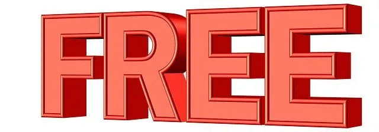

We believe security software like Kicksecure needs to remain Open Source and independent. Would you help sustain and grow the project? Learn more about our 14 year success story and maybe DONATE!
CopyrightDocumentationSupportPrevious page: CopyrightIndex page: DocumentationNext page: SupportReasons for Freedom Software / Open Source



Why Open Source / Freedom Software are essential for user security, privacy and freedom. Security, Legal, Ethical and other Reasons. No Intentional User Freedom Restrictions.
Why Open Source
One of the advantages of Kicksecure is its Open Source nature. Being Open Source means that our source code is publicly available and accessible, allowing anyone to easily read it. Source code is the set of textual instructions written by programmers used to create a program.
What are some of the practical advantages?
- Open Source software usually comes free of charge, providing a cost-effective solution.
- Respects user privacy and freedom, establishing a trustful relationship between developers and users.
- Often exhibits higher stability and quality due to the collaborative nature of Open Source projects.
- Eliminates vendor lock-in, ensuring that the software can outlive its original authors.
- Protects users from mistreatment by developers, providing a safer user experience.
Why is the openness of the source code significant? Here are two scenarios:
- A) You're not a programmer: Source code? What's that? Unable to read or understand any of it? Does it seem irrelevant? Wrong. The availability of source code is beneficial, even if you're not a programmer. Other programmers' ability to work with the source code translates to numerous practical advantages for users.
- B) You're a programmer: You have the liberty to study, modify, and even redistribute the source code under the respective licenses.
Open Source means full transparency in the design, construction, and operation of software. This can lead to more security and more trustworthy software.
Proprietary software (non-freedom software) is the opposite of Open Source software. It often includes anti-features or may even function as malware, thereby mistreating the user. There are many reasons to Avoid Non-Freedom Software.
If you don't know what your computer is doing, your computer is controlling you. Not the other way around.
Why Kicksecure is Freedom Software And Open Source
Motivation |
Rationale |
|---|---|
Security |
Open Source software like Qubes, Debian and Kicksecure is more secure than proprietary/closed source software. The public scrutiny of security by design has proven to be superior to security through obscurity. This aligns the software development process with Kerckhoffs' principle - the basis of modern cipher-systems design. This principle asserts that systems must be secure, even if the adversary knows everything about how they work. Generally speaking, Freedom Software projects are much more open and respectful of the privacy rights of users. Freedom Software projects also encourage security bug reports, open discussion, public fixes and review. |
Legal |
Kicksecure is based on Freedom Software. A lot of Libre licensed software prohibits modification and distribution without sharing the modified source code. |
Ethics |
Kicksecure developers believe it is immoral to benefit from those Free/Freedom Software components and give back nothing. We stand on the shoulders of giants - Kicksecure and many other Libre software projects are only made possible because people invested in writing code that is kept accessible for the public benefit. |
Community |
It is rewarding and enjoyable to have all types of people contributing. This works best in Open Source projects. |
Impact |
When free in price, Kicksecure can spread faster than commercial tools that cannot provide security by default/design. |
Commerce |
Developers hope to make a living from Kicksecure by selling additional services. (Plus Support | Premium Support) |
Career |
Our experience volunteering on this project improves our skill set and makes us more valuable employees. |
No Intentional User Freedom Restrictions
In the spirit of Freedom Software, Kicksecure does not intentionally restrict user freedoms. Kicksecure documentation might discourage certain configurations, but ultimately the user is free to ignore such advice.
In their default state, programs developed under the Kicksecure banner may afford additional protection against unsafe user configurations. For example, even if users wanted to do things which are known security risk and recommended against, but documentation might still be provided on how to disable this security mechanism. Simply put, the end user maintains ultimate control over the final Kicksecure configuration best suited to their needs.
Since Kicksecure is based on Debian it is valid to state that Kicksecure has adopted a specific Debian configuration. For this reason advanced Debian users can independently replicate the same technical implementation. Anything Kicksecure has pre-configured can be re-/de-configured by the user without restriction. User customization is not prevented by technologies used inside Kicksecure, nor is configuration of Kicksecure intentionally obfuscated.
Simply put, the end user maintains ultimate control over the final Kicksecure configuration that best suits their needs.
Software Fork Friendly
Kicksecure policy is that the name of the project should ideally be a variable so it can be easily changed through a software fork.
For example, Kicksecure wiki markup text does not write
Kicksecure literally. Instead it uses variables such as project_name_long which contains
variable content Kicksecure. By changing the contents of
that wiki template to a different textual string such as
MyForkedProject, the name of the project would change wiki
wide from Kicksecure to MyForkedProject.
This is also the reason why many packages names developed under the
Kicksecure umbrella contain dist (which is a generic
abbreviation meaning "distribution") instead of
kicksecure-. Kicksecure source code such as package names
avoid using the literal string Kicksecure as much as possible. Contributions
towards that effort are welcome.
See Also